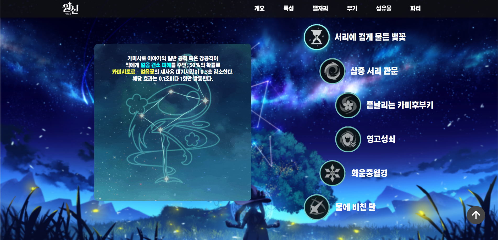

Click!
Let's GO!
알리 익스프레스
기존의 알리익스프레스와의 차별화를 두기 위해서 메뉴의 디자인을 원형으로 디자인했습니다. 확실히 원형 메뉴로 디자인을 했더니 코딩에서 구현하기 힘든 부분이 있었습니다. 그래도 저는 차별화를 위해서 원형 메뉴가 색다른 느낌을 주는 것이 만족스러웠습니다. 그리고 다른 서브 페이지의 레이아웃을 더욱 깔끔하게 바꾸었습니다. 또한 왼쪽의 상단 이미지 같은 경우에는 간단한 자바스크립트를 사용하여 왼쪽의 목록이 드래그를 할 때, 같이 내려올 수 있게 끔 플로팅 제작을 하였습니다. 왼쪽 하단 이미지의 경우에는 좌우로 이미지가 이동할 수 있게 슬라이드 형식으로 만들었습니다.
Click!

Let's GO!
스퀘어 에닉스
메인화면에는 스퀘어 에닉스가 게임 제작 사이트인 만큼 자사의 신작에 대한 홍보와 정보 전달을 위주로 만들었습니다. 그리고 반응형 웹사이트로 제작하였기 때문에 모바일에서 봤을 때에도 깔끔하게 보일 수 있도록 제작하였습니다. 그 다음으로는 밑에 스퀘어 에닉스와 관련된 주제의 소식들을 깔끔한 레이아웃으로 디자인하였고, 게임 서브 페이지에는 정사각형에 가까운 디자인으로 깔끔함을 추구하였고, 마지막인 영상 페이지에는 유튜브 영상 위주와 여러가지 소식을 중점으로 제작하였습니다.
Click!
Let's GO!
셔틀 딜리버리
메인화면에서는 PC로 주문을 할 수 있는 페이지로 넘어가는 메뉴와 모바일로 주문할 수 있는 앱을 다운로드 할 수 있게끔 밸런스 있게 배치를 했습니다. 검색 창과 카테고리 창을 같이 둠으로써, 메뉴를 선택하기 쉽게 만들었고, 메뉴 선택에 어려움이 있다면 메뉴를 선택할 수 있는 미니게임 창으로 이동을 할 수 있는 페이지를 만들었습니다. 랜덤 메뉴 정하기라는 여러가지 음식 이미지가 지나가면서 멈춤 버튼을 클릭해 메뉴를 선택할 수 있게 끔 페이지를 만들었습니다.
Click!

Let's GO!
원신 아야카 공략 웹페이지
일단 캐릭터에 대한 '개요' 다음에는 이 캐릭터의 특성이 무엇이 있는가에 대해 설명하였고, 그 다음 별자리, 그리고 어떤 무기를 껴야하고, 어떤 성유물을 사용해야하는지에 대해 나와 있습니다. 그리고 어떤 파티 캐릭터를 쓰면 좋을지에 대해서 스와이퍼를 사용해 나란히 볼 수 있게끔 제작하였습니다.